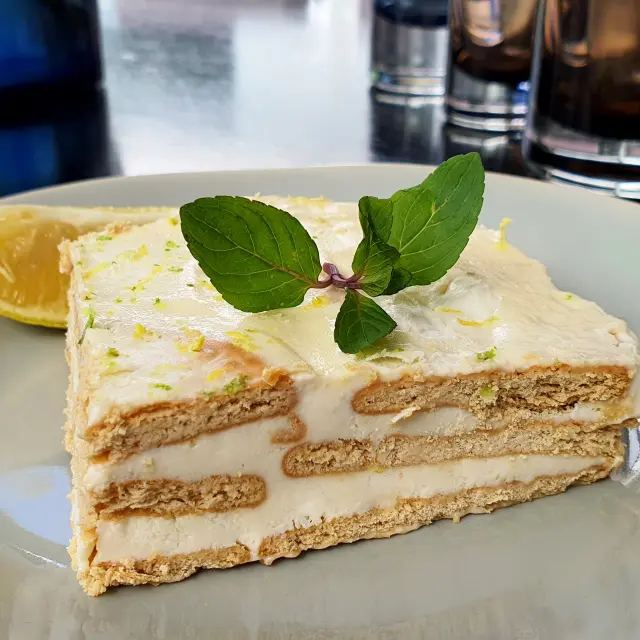

Carlota de Limón
Ingredientes
- 1 lata de leche condensada (397 g)
- 1 lata de leche evaporada (354 ml)
- ½ taza de jugo de limón (4-5 limones)
- 1 paquete de galletas María (140-200 g)
Preparación
Licúa la leche condensada, la leche evaporada y el jugo de limón hasta que espese. En un refractario, coloca una capa de galletas María y cubre con la mezcla. Repite las capas hasta terminar con mezcla. Decora con ralladura de limón. Refrigera por al menos 4 horas o toda la noche hasta que cuaje.